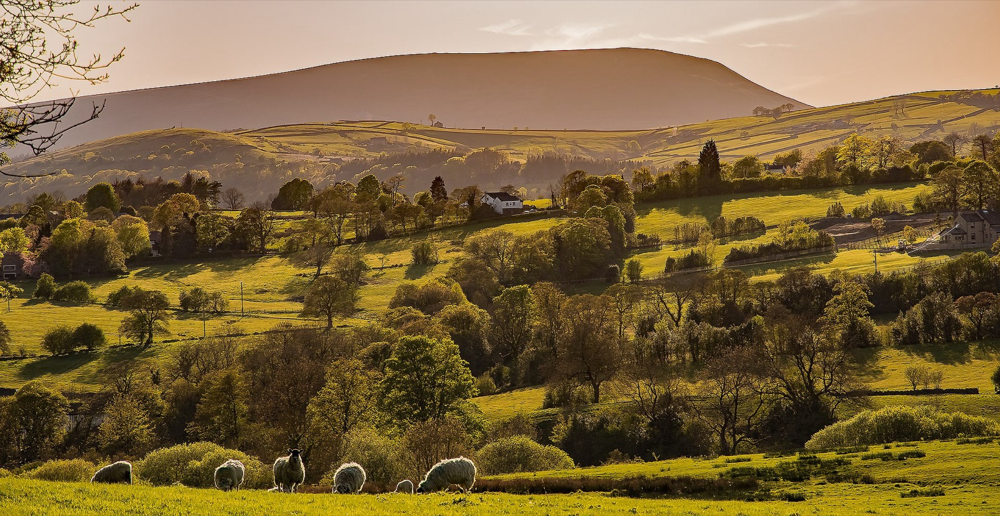

Week-long stays
A full week gives time for Pendle, Towneley, Bowland, Clitheroe and quiet days at the bungalow without rushing the trip.
 The Bungalow Burnley
The Bungalow Burnley
Burnley, Pendle and East Lancashire
A clear guide for walks, parks, halls, mills and easy drives from The Bungalow Burnley. Best for stays of three nights or more, and especially useful for a full week.
Local guide
Stay here and keep the week easy: Towneley Park for a slow morning, Pendle Hill when the weather clears, Queen Street Mill for Lancashire heritage, the canal for level walking, Turf Moor for football weekends, and Gawthorpe Hall or Bowland when you want a fuller day out.
Best fit
The Bungalow suits guests who want more than a bed: parking, a proper kitchen, a quiet evening base and enough nearby plans to make three nights or a week feel worthwhile.
A full week gives time for Pendle, Towneley, Bowland, Clitheroe and quiet days at the bungalow without rushing the trip.
For a shorter stay, keep it simple: one local heritage day, one park or viewpoint, and one clear-weather countryside plan.
For Turf Moor weekends or visiting family nearby, self-catering gives guests a calmer base than a hotel room.
Start here
These four routes cover most stays: open views, calm heritage, local history and longer countryside days.

Pendle Hill, the Singing Ringing Tree, canal paths and moorland edges for fresh air without overfilling the day.

Towneley Hall, Thompson Park and Gawthorpe Hall make good low-mileage days with history, gardens and easier pacing.

Queen Street Mill, the Leeds and Liverpool Canal and Burnley's textile history give the stay a stronger sense of place.

Use a longer stay for the Forest of Bowland, Clitheroe, Ribble Valley villages and wider Lancashire routes.
Places to visit near Burnley
Use these as simple day shapes. They help a luxury self-catering stay feel planned without making it busy.
Towneley Hall and Park, the Singing Ringing Tree and the canal give a strong Burnley day without a long drive.
Use the best weather for Pendle Hill or a viewpoint. Keep a canal route ready if wind, rain or low cloud changes the plan.
Queen Street Mill, Towneley Hall, Gawthorpe Hall and the canal tell the Lancashire story behind the stay.
Use Burnley as the base, then add Padiham, Clitheroe, the Ribble Valley, Bowland and a quiet evening back at the bungalow.

Guest favourite
It is close enough for a simple outing and different enough to stay in the memory. Go when the light is good, take a jacket and expect open views rather than a long attraction visit.
Weather plan
East Lancashire is better when you do not fight the forecast. Keep a hills plan for clear conditions and a heritage or park plan ready for wet days.
Do Pendle or a viewpoint while the skies are open, then keep the rest of the stay easier.
Use Queen Street Mill or Towneley, then add the canal for a short walk if conditions allow.
A park stroll, a food stop and a quiet evening back at the bungalow can make a week feel better.
Stay length
The local area is easier to enjoy when the stay length is clear. Three nights gives a clean Burnley break. A week gives space for weather, laundry, slower mornings and proper day trips.

Arrive, settle in, keep one local park or hall day, then save a clear morning for Pendle or the Singing Ringing Tree.

Add the canal, Queen Street Mill and a slower Burnley day. This suits mixed weather.

Use the bungalow as a home away from home: Towneley, Gawthorpe, Pendle, Bowland, Clitheroe and one quiet day in between.
Before you go
Opening times, parking, access, weather and footpath conditions can change. Check official pages before leaving, especially for museums, halls and countryside routes.
The Bungalow works best when guests do not cram everything into one day. Pick one main plan, one food stop and leave room for the weather.
Build your stay
For a week, choose one walking day, one calm park day, one heritage day and one bigger countryside drive. Keep the rest loose.
Guest questions
Towneley Hall and Park, Thompson Park, Queen Street Mill, the Leeds and Liverpool Canal, the Singing Ringing Tree and a clear-weather trip towards Pendle Hill all work well from a Burnley base.
Yes. Burnley gives guests practical town access, food and shops, while Pendle, Padiham, Bowland, Clitheroe and the Ribble Valley are available as wider day plans.
Yes. Pendle Hill is one of the strongest local countryside plans. Check the weather, route, daylight and parking before committing to the walk.
Keep Queen Street Mill, Towneley Hall, local food stops and shorter canal sections as backup plans. A rainy day does not need to become a wasted day.